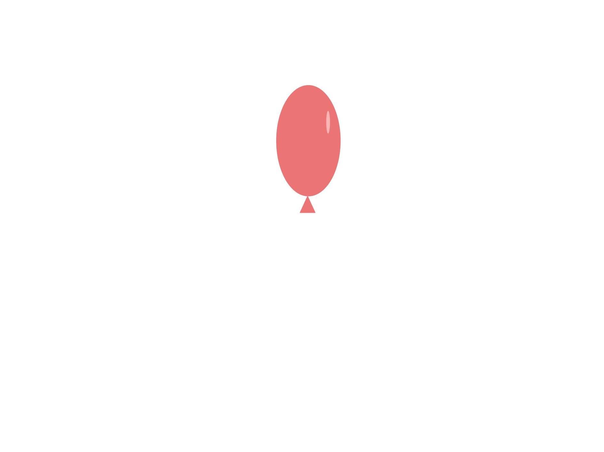

Chapitre 1
Il était une fois....
Un petit bonhomme nommé Smiley qui décida de partir en aventure chercher un ami.
PSSS.. Scroll vers la gauche ou la droite pour faire marcher Smiley!
Chapitre 2
Smiley marcha pendant des heures, il se sentait libre, mais seul.
Il s'est dit qu'il allait arrêter de marcher seulement quand un
miracle va se passer!


Chapitre 3
Ne voyant pas les heures passer, Smiley marcha durant toute la nuit!
Smiley adore observer les étoiles!


Chapitre 4
Déjà rendu au lendemain, Smiley appercoit la fin du chemin.
Il était curieux de voir à quoi ressemblait la vue à la fin du chemin, donc s'approcha.
Smiley TOMBA en bas de la falaise!

Chapitre 5
- AAAAAAAAHHH!!! Aidez-moi quelqu'un!!


Chapitre 6
C'est alors qu'il apperçut un ballon qui flotte dans les airs.
Smiley attrape le ballon!



Chapitre 7
Smiley réussit à atterir tout en douceur grâce au ballon!
Une fois par terre, il s'apperçut que les couleurs ne sont pas comme celles de d'habitude?
Il est atterit dans un nouveau monde!!
Toujours en continuant de marcher, il vu un oiseau foncé non sur lui, mais sur son beau ballon!
POOF! Le ballon explose! Mystérieusement, celui-ci se retransforme en un ballon ENCORE plus joli!

Chapitre 8
Il rencontra une amie comme lui et lui donna le ballon! Les deux amis continuèrent leur aventure, heureux de s'avoir rencontré!